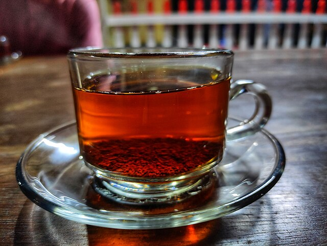
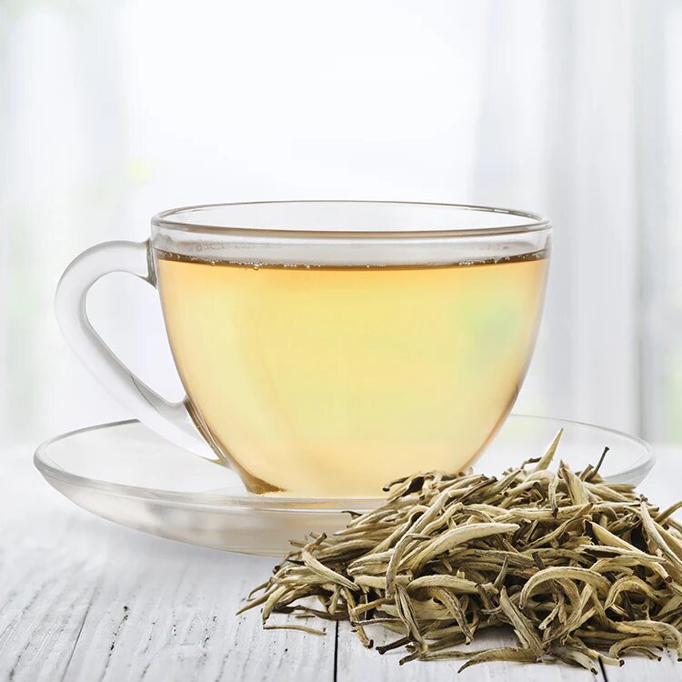
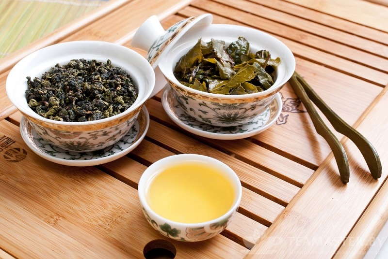
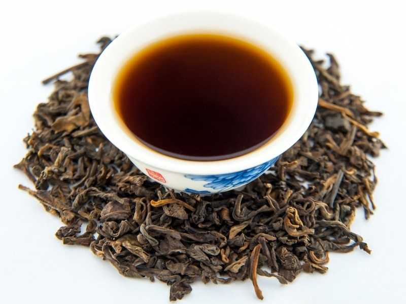
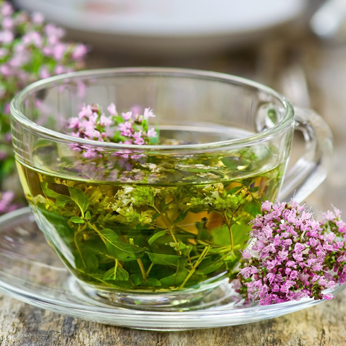
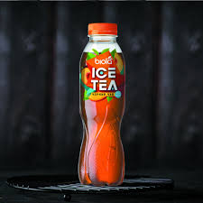

Види чаю
Чай - один із найпопулярніших напоїв у світі, і його різновидів існує безліч. Кожен вид чаю відрізняється не лише смаком та ароматом, але й корисними властивостями.
Розглянемо основні види чаю та їх особливості:
Чорний чай - найпоширеніший і найміцніший вид чаю. Він проходить повну ферментацію, що надає йому насичений, глибокий смак та темний колір. Чорний чай має тонізуючі властивості завдяки вмісту кофеїну, і часто стає основою для таких сумішей, як англійський сніданок та Ерл Грей. Популярні сорти чорного чаю включають Ассам, Дарджилінг та Кімун.

Зелений чай не піддається повній ферментації, що дозволяє зберегти його світло-зелений колір та свіжий, трав'янистий смак. Цей вид чаю багатий на антиоксиданти і вважається корисним для здоров'я: він зміцнює імунітет, покращує обмін речовин і допомагає боротися зі старінням. Серед відомих сортів зеленого чаю можна виділити Сенч, Матч і Ганпаудер.
Білий чай - найбільш делікатний і ніжний вид чаю, який отримують з молодих бруньок і листя, що не піддається ферментації. Білий чай містить більше антиоксидантів і менше кофеїну, ніж чорний або зелений, що робить його м'яким та корисним для шкіри. До відомих сортів білого чаю відносяться Бай Хао Інь Чжень та Бай Мудань.
Улун - це чай, який проходить часткову ферментацію, перебуваючи між зеленим та чорним чаєм. Улуни мають різноманітні смакові характеристики - від квіткових і фруктових до насичених, деревних нот. Улун вважається корисним для травлення та допомагає підтримувати баланс в організмі. Популярні улуни - це Тегуаньінь і Да Хун Пао.
Пуер - це ферментований і витриманий чай, який часто порівнюється з вином через його глибокий, складний смак і здатність покращуватися з часом. Пуер має темний колір і насичений земляний смак, який цінують любителі міцних напоїв. Його вважають корисним для травлення та зниження рівня холестерину.
Трав'яні чаї (іноді звані "трав'яні настої") насправді не містять чайного листа, а виготовляються з різних трав, квітів, фруктів та спецій. Популярні види трав'яних чаїв включають ромашковий, м'ятний та імбирний. Ці напої часто використовуються для покращення сну, заспокоєння та підтримки здоров'я.

Маття - це порошкоподібний японський зелений чай, який роблять з листя тенча, попередньо висушених і подрібнених до стану порошку. Традиційно маттю збивають у гарячій воді спеціальним бамбуковим пензликом, створюючи густу, пінисту текстуру. Маття цінується за тонізуючий ефект, і широко використовується в японській кулінарії.
Холодний чай - це освіжаючий напій, який зазвичай готують на основі класичного чаю (чорного, зеленого або трав'яного), але подають охолодженим, іноді з льодом. Він став особливо популярним у теплу пору року завдяки своєму освіжаючому смаку та можливості легко комбінувати з різними добавками, такими як фрукти, ягоди, м'ята чи лимон.